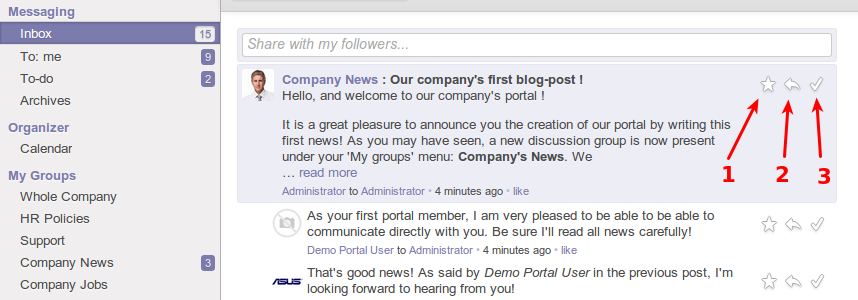
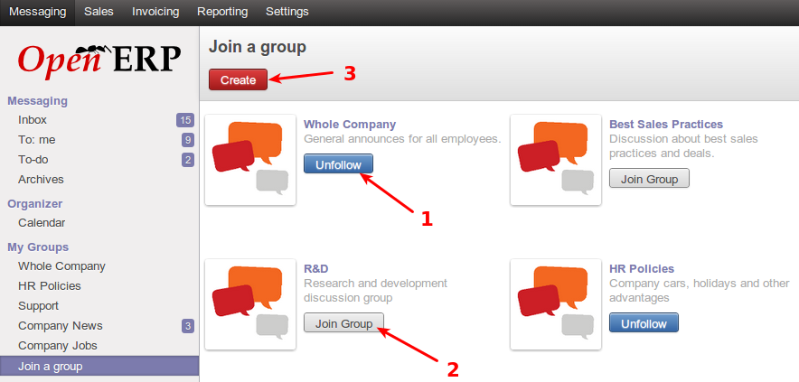
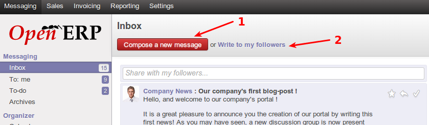
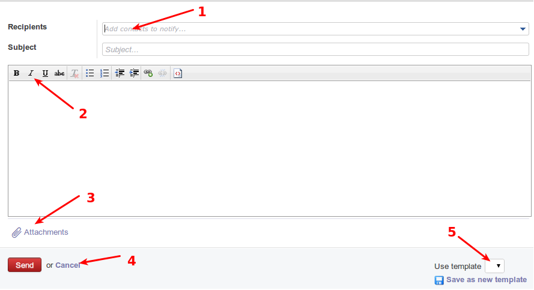
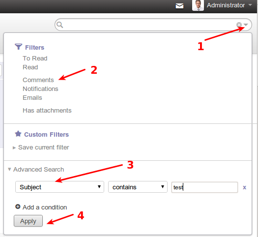
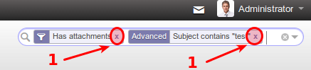
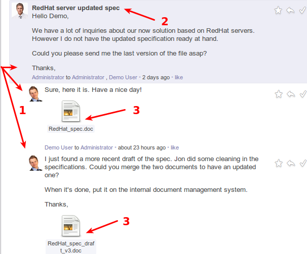
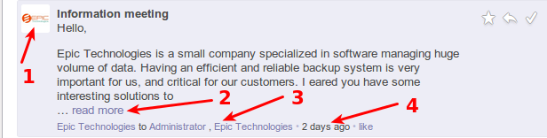

Messaging
About
Messaging is a new feature in OpenERP 7, which aims to keep all business communications within the ERP system, versus externally such as in separate email clients. Messages allow for an out and in flow of discussions directly from OpenERP to a contact/customer/partner/colleage. Messages also serves as a business todo list based on those communication flows, and discussion groups for mailing list functionality for business teams.
Message marking
The following screenshot displays the buttons used to mark messages as done, or todo, or to reply to the message.

- Mark this message as todo. If the message is actionable to the user, this marks the message as todo, and moves the message out of the current box. The message will then be seen in the todo sub menu.
- This replies to the message, providing an input box below the message, in which the user can type the reply and send it.
- Mark message as done. This moves the message into the archive and out of sight, but accessible if later needed for any reason.
Groups
The following screenshot displays user actions within the groups area of messaging.

- Leave a group. Each user by default is part of a group called “Whole company”, but also a part of other groups the user elected to be in. A user can at any time leave a group by selecting unfollow on a group.
- Join a group. A user can join a group that he/she has permissions for, and can thereafter read and post new messages within the joined group.
- A user may create a group if he/she has permissions, other users can then join the group.
Sending messages
The following screenshot displays the interface for sending messages to other users or contacts/customers/partners etc

Followers: In OpenERP 7, any user is able to follow other users/contacts/customers/partners, or even documents. All messages then sent to and from a person/document’s follower message composer will be received by the user (being a follower). Replies to such messages is also seen by all followers of the person/document. Followers is like group messaging, centered around a contact/person/document etc. They can be seen as mini groups that come and go with documents or persons, for which discussions are based around.
OpenERP 7 allows a user to compose a message to any person, or a shortcut to write to all followers of a person/document.
- This button allows a user to generically compose a new message to any person or contact.
- This is the shortcut to compose and send a message to followers of the user. (All others following you)
The screenshot below displays the generic message compose window

- This is where recipients will be entered, simply typing the recipients starting email or name, will offer choices based on contacts within the system. More than one recipient may be entered here.
- These are rich text formatting options which can be used to compose this message
- This allows a user to attach a file from his/her PC, to the message. This is the same as attachments in email. The user can select a file from their local system to be sent.
- These buttons send the message or cancel the compose.
- This allows a user to select a template, with predefined message body content and formatting (templates will be discussed later)
Message Searching
The following screenshot displays the searching options in the messaging section. Searching can be done with the universal search bar as indicated.

- To access the advanced search options, this dropdown icon should be clicked. It presents advanced search filters that is relevant for the area in which the user is working.
- These are quick filters, clicking on them applies the filter immediately, they are shortcuts for commonly needed filters.
- Advanced search for message components, such as subject, author, attachments, etc
- Apply advanced search.
The following screenshot displays how to remove applied filters to a search.

- Each applied filter displays in the universal search bar as a box. Clicking on the ‘x’ on the right end of the box for the filter, removes the filter and searches without that filter
Message viewing
The following screenshot displays a typical message thread

- Threaded messages. A conversation and its replies are kept together in a thread to read. The original message is shown on the top, and each reply thereafter are displayed underneath with left indentation to visually show that the message is part of a thread.
- The message subject is shown once on the original, which is the top most message in the thread. The subject is bolded for quick viewing.
- Attachments in messages are shown in preview of the messages they are sent with. Clicking on any of the attachments allows the user to download the attachment locally, and open and view it.
The following screenshot outlines more info on a typical message display

- Picture of original message sender. If the contact in the system has an image assigned, it is displayed here, otherwise a default image is displayed.
- If the message text is long, the message is previewed and the rest of the message is hidden. To display the entire message in question, the “read more” link can be clicked.
- Recipients of the message can be seen at a glance at the bottom of a given message
- Message age can be seen at a glance at the bottom of a given message